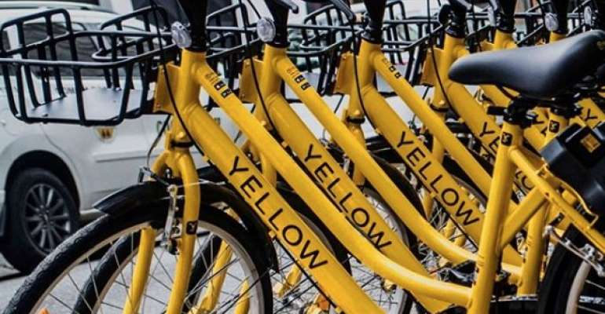
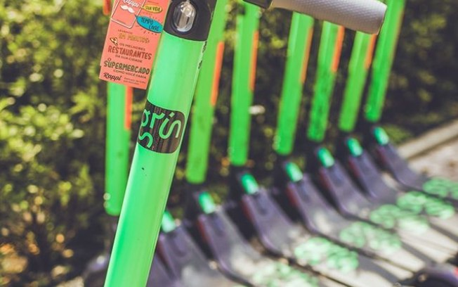
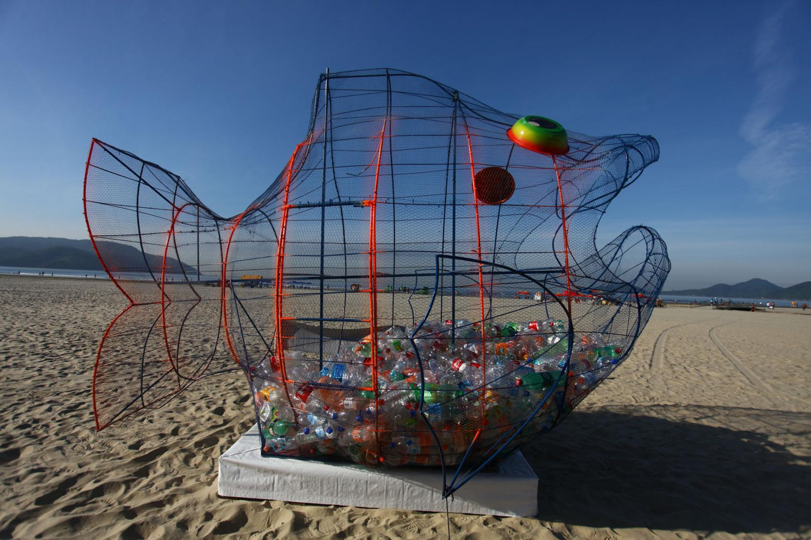
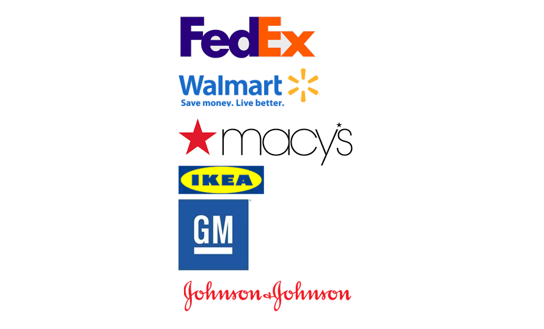
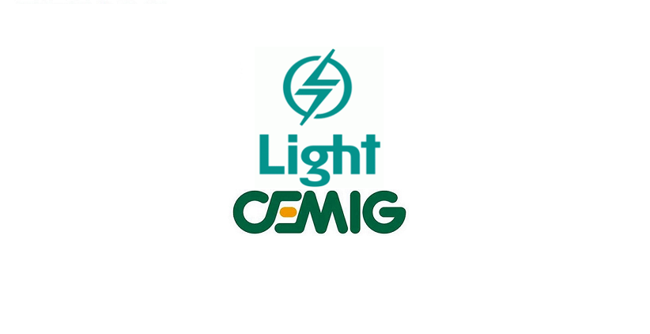
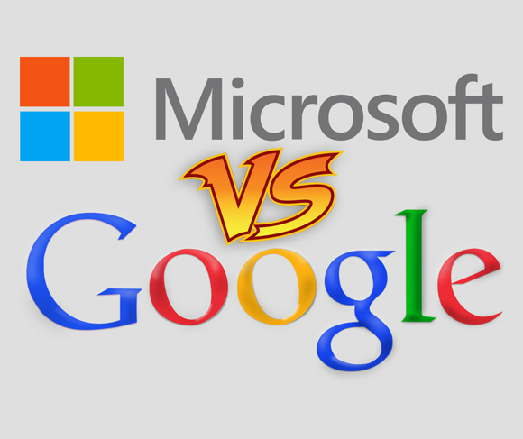

São Paulo
|  |
Yellow - Aluguel de Bikes
Um sistema de aluguel de bicicletas por aplicativo tem ajudado muito nosso meio ambiente pois podemos ver muitas pessoas
que estariam utilizando o carro para ir logo ali e agora estão utilizando as bicicletas do App assim ajudando o nosso meio
ambiente diminuindo a poluição. Essa App é um exemplo de sustentabilidade pois é algo que visa o meio ambiente e a saúde.
|
Santos
|  |
Grin - Aluguel de patinetes
A Grin é uma empresa que oferece aluguel de patinetes elétricos para lazer das pessoas e também como meio de locomoção.
Assim também fazendo a população economizar a gasolina e também preservando o meio ambiente diminuindo a poluição.
|
|  |
Programa inicia com peixe construído para receber lixo limpo
Um peixe construído com material reciclado está instalado desde a manhã desta sexta-feira (01/02/2019) na areia da praia do
Boqueirão. Com cerca de três metros de altura, a estrutura foi concebida para armazenamento de lixo limpo, que será separado por
agentes da ONG Sem Fronteiras por meio do programa Recicla Praia.
“O objetivo é estimular a sustentabilidade. A pessoa passa o dia na praia e, na hora de ir embora, pode
contribuir com a sociedade. A expectativa é de que a população venha a aderir e sejamos obrigados a espalhar equipamentos como
esse por toda a orla”, diz o prefeito Paulo Alexandre Barbosa, mencionando também o cunho social da proposta. “A reciclagem gera
emprego e renda”.
Segundo o presidente da ONG Sem Fronteiras, Marcelo Adriano da Silva, o recolhimento e a separação do
material descartado na estrutura serão feitos por 15 cooperados em situação de vulnerabilidade social. Para ele, “o peixe representa aquilo que está acontecendo hoje nos oceanos, pois o lixo vem matando muitos animais marinhos”.
|
Empresas Americanas
|  |
Geração de energia solar
Nos Estados Unidos e na Europa, onde o mercado da economia verde tem crescido muito rapidamente,
empresas como o Walmart, a Ikea, a Macy’s, a Johnson & Johnson,
a General Motors e a FedEx estão entre os 20 maiores negócios em
termos de geração de capacidade energética solar.
Os 20 nomes dessa lista chegam a gerar, em
média, 47 milhões de dólares em energia limpa
por ano. Nessa corrida, outras empresas têm
buscado aumentar sua participação em termos de
utilização de energia solar. Esse é o caso da Apple,
da GE, da Google, da Intel, da L’Oreal e da Tiffany & CO.
|
Grandes Investimentos Facilitadores
|  |
Investimentos
Ainda que a maior parte do uso da energia solar decorra da iniciativa privada, o governo tem proporcionado uma série de incentivos para aumentar sua expansão no Brasil. Há, por exemplo, uma taxação menor para esse setor energético. Além disso, diversas obras públicas contam com rubricas específicas para a utilização de energia solar e outras medidas de sustentabilidade. Esse foi o caso das obras para a Copa do Mundo desse ano. No Maracanã, por exemplo, foi construída uma cobertura fotovoltaica para gerar energia, em parceria com a companhia Light Esco. Já em Minas Gerais, o Mineirão também passou por reformas e, hoje, gera uma quantidade de energia limpa capaz de abastecer 1.200 residências!
Além dessas iniciativas, empresas como a Petrobrás, a Companhia Energética de Minas Gerais (Cemig) e a Solbravo, do Paraná, têm realizado diversos investimentos no setor. O que se espera para os próximos anos é o crescimento significativo da participação da energia solar no país.
|
Grandes Vantagens Competitivas
|  |
Vantagens Competitivas
O que motiva essas empresas já tão consolidadas no mercado a investirem na utilização de energia solar? Pois uma das razões é a visibilidade comercial que se ganha por ter essa preocupação com a sustentabilidade. O uso da energia solar em lojas e linhas de produção é extremamente benéfico para o meio ambiente, porque essa é uma fonte renovável de energia e pouco poluidora. Assim, além de reduzir a emissão de gás carbônico na atmosfera, não há a eliminação de outros resíduos tóxicos na natureza. Por esse motivo, o consumidor tem, cada vez mais, observado esses aspectos no momento da escolha de marcas para a realização de qualquer compra.
Uma outra razão para o grande investimento na área é a própria economia envolvida no processo como um todo. Apesar de se necessitar de um maior investimento inicial para a compra e a instalação de painéis de captação da luz solar, os retornos econômicos da utilização dessa fonte de energia são bastante significativos. E uma vez que esses painéis requerem pouquíssima manutenção, o que os garante vida longa, a vantagem financeira passa a ser ainda mais vultosa, já que o custo do investimento inicial logo se paga e o resto é pura e total economia.
|